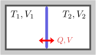
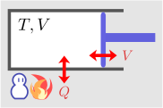

2.気体のエネルギー
熱的に接触している系の平衡条件。
熱的に接触している系の平衡状態が知りたい

右図のような、内部が仕切られた断熱容器（＝熱を通さない容器、例えば魔法瓶）の平衡状態を考える。具体的には、まず、両方の部屋の温度・体積を、それぞれ
および
としておく。その後、仕切りを、熱を通し自由に動けるようなものに変化させると、仕切りは勝手に動き、最終的にどこかで止まる。それはどこだろうか、という問題である。右図の
という表記において、
は熱を通すことを表し、
は仕切りの位置が自由に動くことを表す。
1つの容器の平衡状態は、温度
と体積
という2つの変数を決めれば一意的に決まる。。即ち、熱力学的自由度は2である。今考えているのは2容器系なので、熱力学的自由度は
であり、容器1の
および容器2の
である。これらの始状態が与えられたうえで、終状態を求めたいわけである。
未知数は終状態の4つなので、そのためには4つの条件が必要となる。そのような条件として、3つは直感的に分かる。即ち、「体積の和
が前後で変化しない」、「圧力が等しい」、「温度が等しい」である。しかし、これでは1つ足りない。残りの1つとして、断熱容器であるという条件、即ち、容器のエネルギー保存則を課せば良いだろう。（仕切りが熱を通さない場合、温度が等しいという条件がなくなるので、条件が足りない。これについては、エントロピーという量を考えればよいいのだが、次章以降で扱う。）
この章では、容器のエネルギー（＝内部エネルギー）を求める。また、理想気体について実際に計算を行う。
2.1内部エネルギーの値
まず、1つの容器だけがある場合を考え、内部エネルギーを導入する。
複数の容器がある場合、通常は、全体の内部エネルギーは、各容器の内部エネルギーの和になる。これが成り立たないのは、容器をまたぐようなマクロな相互作用がある場合である。例えば、（帯電した気体が入っていて）容器全体が帯電しているような場合が該当する。以後、このような場合は考えず、内部エネルギーは加法的であるとする。
内部エネルギーは、温度と体積の関数
繰り返しになるが、容器の状態を変化させた時、変化後の状態は、温度
と体積
を決めれば一意的に決まる。即ち、圧力
や定積熱容量
は、
だけの関数になる。（単純な気体を考えており、相転移や化学変化などはないとしている。）内部エネルギー
も
だけの関数になる。このことを、
で表すことにする。
を求めたい

次は、内部エネルギー
をどのように（実験的に）求めるかである。
は温度
と体積
の関数なので、
を変化させることを考える。そのためには、右図のように、外部との熱のやり取りや、容器の変形を引き起こせばよい。温度と体積の微小変化
における、
の変化は、1次近似により以下のようになる：（記法については以下の【2.1-注1】参照）
従って、この係数の関数形を測定などにより決めれば、
が原点の取り方を除いて決まる。
は、「体積を変えずに温度を
上げるのに必要なエネルギー」なので、定積熱容量
そのものである
（これも
の関数になるので
と書いている）。これを用いて、式(
)を書き換えておく：
は、前章で述べたように測定できる。このような量が存在するのであれば、可積分条件：
（力学編の第14章参照）
を満たさなければならない。
従って、残った
を実験的に求める方法を考える。そのためには、式(
)において、
以外の量が全て特定できればよいわけである。ここでは、自由膨張を用いたものと、圧力を用いたものについて述べる。
【2.1-注1】偏微分の略記
関数
を
と略記する：
その偏微分を、
にドットを付けて表す。例えば：
補足
1次近似は以下のようになる：
は1次近似であることを表す（力学編の【1.1-注1】参照）。
一般的な表記法ではない。なお、最後の式(
)を使うのは、偏微分が順序によらない
（＝2階全微分可能な）場合のみである。
(1) 自由膨張による測定
1つ目として、内部エネルギーを変化させないような変化を考える。これは、体積が
の真空容器と接触させておいて、壁に穴をあけるというものである。穴をあけるのに必要なエネルギーは無視できるので、
である。この時の温度変化
を測定すれば、式(
)の未知数は
だけとなり、計算できることになる。
なお、理想気体の場合、前章で述べたように、自由膨張で温度が変化しないので
である。理想気体の場合、内部エネルギーは、以下の【2.1-注2】のようになる。
【2.1-注2】理想気体の内部エネルギー
理想気体の内部エネルギー
は、以下のようになる：（
は定積熱容量であり、定数）
導出
前章で述べたように、理想気体の場合、定積熱容量
は定数
であり、また、式(
)が成り立つ。これらを、内部エネルギーの微分(
)に代入すると
となる。式(
)は、確かにこれを満たす。
式()には、定数を加える自由度があるが、エネルギーの変化に興味があるのだから、どうとってもよい。
(2) 状態方程式を用いた測定
2つ目として、内部エネルギーの変化が、力学的に求まる場合を考える。状態方程式
（＝圧力
を温度
と体積
の関数として表したもの）が分かっているとする。
圧力のつり合いを保ったままで、体積を
だけ変化させた時の内部エネルギー
の変化
は
となる。従って、この時の温度変化
を測れば、式(
)にこの式を代入して
を消去することにより、
が求まることになる。
ただし、圧力のつり合いを保ったまま、というのが曲者である。体積の変化
を生じさせている間、常に
に等しいとみなせる圧力がかかっていなければならない。なぜそのようなことを気にするかというと、圧力は、変形のさせ方に依存するからである。例えば、ピストンを引く時、気体分子の速さよりも速く引くと、分子を置き去りにするので、動かし始めた瞬間に圧力が急激に減少する。逆に、ピストンを押し込む時、速く押し込むと、ピストンの周りに気体がたまってしまい、ピストンが「重く」なる、即ち、圧力が大きくなる。
このように、圧力が状態方程式が示す値と常に等しくなるためには、平衡状態を保ちながら変化させる必要がある。要は、非常にゆっくり変化させればよいわけである。このように変形をゆっくりにしていった極限を、準静変形という。（準静変形というとき、ピストンと壁との摩擦は無視できる状況を考えている。そうでない場合、準静変形であっても摩擦の影響は無視できない。）
（補足： は状態方程式から求まる）
なお、第4章で導くが、
は、以下を満たす：（エネルギー方程式）
従って、状態方程式
さえ分かっていれば、
は求まるのである。これを代入すると、式()は以下のようになる：
結局、内部エネルギーを決めるには、定積熱容量と状態方程式が分かれば十分ということになる。
2.2冒頭の問題
冒頭の問題を繰り返すと、2つの部屋の始状態がそれぞれ
と
である時、仕切りを「熱を通し自由に動くもの」に瞬間的に切り替えた後、終状態
と
を求めたい。
部屋をまたいだ相互作用は考慮していないので、全体の内部エネルギー
は、各部屋の内部エネルギー
の和になる：
この章では、この問題を解くための方程式を書き下し、理想気体についての解を与える。ついでに、仕切りが動かないようにした場合についても述べる。
解くべき方程式
解くべき条件式は、この章の冒頭で述べたとおり、以下のようになる：
体積の和が不変：圧力が等しい：温度が等しい：内部エネルギーの和が不変：
これで未知数の数4と方程式の数が一致したので解が決まる。実際に解くには、それぞれの部屋の状態方程式と内部エネルギーの関数形が分かっていればよい。
理想気体の場合、以下の【2.2-注1】となる。
【2.2-注1】 を交換する理想気体の平衡
この節の冒頭の問題について、理想気体の場合の解は、以下のようになる：
導出
内部エネルギー【2.1-注1】と、状態方程式
を、条件式(
)に代入すると
となる。この第3式を前後の式に代入すればすぐ解ける。
仕切りを固定した場合
ついでに、仕切りを固定して、熱だけを通す場合を考える。その場合、両方の部屋の体積は変化しないので、方程式は、式(
)の下2つだけになる
温度が等しい：内部エネルギーの和が不変：
未知数は
だけとなり、この方程式だけで解ける。
理想気体の場合、以下の【2.2-注2】となり、【2.2-注1】の結果(
)と同じになる。
【2.2-注2】 のみを交換する理想気体の平衡
【2.2-注1】において、仕切りの位置を固定した場合でも、平衡状態の温度は、式(
)と同じになる：
導出
【2.2-注1】の場合と同じ要領で導ける。（結果が同じになるのは、理想気体の場合、内部エネルギー
が体積
に依存しないことの反映である。）